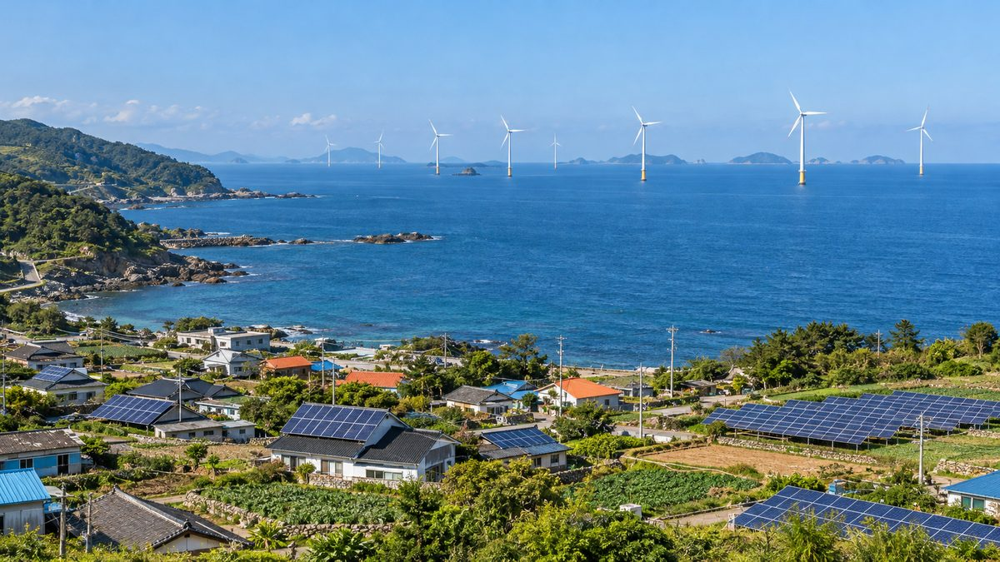

내년 RPS 대신할 재생에너지 새 계약시장, 해상풍력 투자·주민참여 사업 수익성 쟁점…REC 가중치 역할 이어받을지가 관건

정부가 발전원별 물량·상한가격 제시 뒤 경쟁입찰·한전 장기 고정가격 계약…해상풍력 단가 kWh당 330원대에서 2035년 150원 이하 목표, 업계는 먼바다 비용 반영 요구
내년 신재생에너지 공급의무화제도(RPS)를 대신할 새 계약시장이 문을 열면서, 발전단가를 낮추려는 가격 설계가 해상풍력 투자와 햇빛소득마을 같은 주민참여 사업의 수익성까지 좌우할 쟁점으로 떠올랐다. 새 시장에서는 정부가 발전원별 보급 물량과 상한가격을 내놓으면 사업자가 경쟁입찰에 참여하고, 선정된 사업자는 한국전력과 장기 고정가격 계약을 맺는다. 정부는 2030년까지 재생에너지 100GW 이상, 2035년까지 해상풍력 25GW 이상을 보급하고, 해상풍력 발전단가를 kWh당 330원대에서 2030년 250원 이하, 2035년 150원 이하로 낮춘다는 목표다. 해상풍력 업계는 신안·진도처럼 육지에서 멀고 수심이 깊은 바다의 추가 비용을 그동안 REC 가중치가 메워 왔다며, 새 시장의 우대가격이 이를 반영하지 못하면 먼바다 대형 사업과 프로젝트파이낸싱(PF), 국내 기자재 공급망이 부담을 떠안게 된다고 우려한다. 코리오제너레이션의 한국 조직 정리, RWE의 신안·태안 사업 철수, 에퀴노르의 울산 반딧불이 부유식 사업 중단이 잇따랐지만, 원자재·금융비용 상승과 인허가·계통·주민 수용성 문제가 겹친 결과여서 RPS 개편 탓으로만 볼 수는 없다. 투자 수요가 사라진 것은 아니어서, 올해 상반기 해상풍력 고정가격 경쟁입찰에는 9개 사업 3,656MW가 참여해 5개 사업 1,786MW가 뽑히며 처음으로 약 2대 1의 경쟁률을 기록했다.
시민에너지 관점
새 계약시장이 낙찰 가격만 겨루는 구조가 되면 자본과 규모를 갖춘 대형 사업자가 유리해지고, 주민 출자로 시작하는 마을 단위 사업은 수익 계산부터 어려워질 수 있다. 가격을 낮춰야 하는 때에 주민 우대는 사치라는 반론이 나올 수 있지만, 주민 반대로 멈추거나 늦어지는 사업이 치르는 비용을 생각하면 주민 참여는 비용이 아니라 사업을 굴러가게 하는 조건이다. 프랑스는 재생에너지 입찰에서 시민이나 지자체가 출자한 사업에 '참여 보너스'로 계약 가격을 조금 얹어 주는 제도를 운영해, 가격 경쟁 속에서도 시민 출자 사업이 설 자리를 남겨 두었다. 새 계약시장의 우대가격과 비가격 평가에 주민 지분 비율과 지역 소유를 분명한 항목으로 넣어, REC 가중치가 해 오던 역할이 시민주도 사업 쪽으로도 이어지게 해야 한다.
출처: 남도일보 2026-10-25 조태훈 원문 보기
来年RPSに代わる再エネの新契約市場、洋上風力投資と住民参加事業の収益性が争点…REC加重値の役割を引き継げるかが鍵
政府が電源別の導入量と上限価格を示した後に競争入札・韓電と長期固定価格契約…洋上風力の発電単価を1kWh当たり330ウォン台から2035年150ウォン以下に下げる目標、業界は遠い海のコスト反映を求める
来年、再生可能エネルギー供給義務化制度（RPS）に代わる新たな契約市場が始まるのを前に、発電単価を下げようとする価格設計が、洋上風力への投資や太陽光所得村のような住民参加型事業の収益性まで左右する争点として浮上している。新市場では、政府が電源別の導入量と上限価格を示すと事業者が競争入札に参加し、選ばれた事業者は韓国電力と長期固定価格契約を結ぶ。政府は2030年までに再生可能エネルギー100GW以上、2035年までに洋上風力25GW以上を導入し、洋上風力の発電単価を1kWh当たり330ウォン台から2030年に250ウォン以下、2035年に150ウォン以下へ引き下げる目標を掲げている。洋上風力業界は、新安・珍島のように陸から遠く水深の深い海域の追加コストをこれまでREC加重値が補ってきたとして、新市場の優遇価格がそれを反映できなければ、遠い海の大型事業やプロジェクトファイナンス（PF）、国内の資機材サプライチェーンが負担を抱えることになると懸念する。コリオ・ジェネレーションの韓国組織の整理、RWEの新安・泰安事業からの撤退、エクイノールの蔚山「パンディッブリ」浮体式事業の中断が相次いだが、原材料・金融コストの上昇と許認可・系統・住民受容性の問題が重なった結果であり、RPS改編だけが原因とはいえない。投資需要が消えたわけではなく、今年上半期の洋上風力固定価格競争入札には9事業3,656MWが参加し、5事業1,786MWが選ばれ、初めて約2倍の競争率を記録した。
市民エネルギーの視点
新契約市場が落札価格だけを競う仕組みになれば、資本と規模を備えた大手事業者が有利になり、住民の出資で始まる集落単位の事業は収益の計算から難しくなりかねない。価格を下げなければならない時に住民優遇はぜいたくだという反論もあり得るが、住民の反対で止まったり遅れたりする事業が払うコストを考えれば、住民参加はコストではなく事業を前に進める条件だ。フランスは再生可能エネルギーの入札で、市民や自治体が出資した事業に「参加ボーナス」として契約価格を少し上乗せする制度を運用し、価格競争の中でも市民出資事業の居場所を残してきた。新契約市場の優遇価格と非価格評価に、住民の持ち分比率と地域所有を明確な項目として盛り込み、REC加重値が担ってきた役割が市民主導の事業にも引き継がれるようにすべきだ。
出典: 南道日報（Namdo Ilbo） 2026-10-25 チョ・テフン 原文を読む
明年取代RPS的可再生能源新合同市场引发海上风电投资与居民参与项目收益争议，关键在于能否接替REC权重的作用
政府公布各电源装机量和上限价格后进行竞争招标，中标者与韩电签订长期固定价格合同…目标将海上风电成本从每kWh 330韩元级降至2035年150韩元以下，业界要求反映远海成本
随着明年取代可再生能源配额制（RPS）的新合同市场即将启动，旨在压低发电成本的价格设计已成为左右海上风电投资以及阳光收入村等居民参与型项目收益的焦点。在新市场中，政府公布各类电源的装机量和上限价格后，开发商参与竞争招标，中标者与韩国电力公社签订长期固定价格合同。政府的目标是到2030年普及100GW以上的可再生能源，到2035年普及25GW以上的海上风电，并把海上风电发电成本从目前每kWh 330韩元级降至2030年250韩元以下、2035年150韩元以下。海上风电业界表示，像新安、珍岛这样离岸远、水深大的海域所增加的成本，过去一直由REC权重来弥补；如果新市场的优惠价格不能反映这一点，远海大型项目、项目融资（PF）和国内设备供应链都将承受压力。Corio Generation整顿了韩国业务团队，RWE退出了新安和泰安项目，Equinor中止了蔚山Bandibuli浮式项目，但这些是原材料和融资成本上升以及许可、电网和居民接受度等问题叠加的结果，不能只归咎于RPS改革。投资需求并未消失，今年上半年海上风电固定价格竞争招标共有9个项目、3,656MW参与，5个项目、1,786MW中标，竞争率首次达到约2比1。
市民能源视角
如果新合同市场只比拼中标价格，拥有资本和规模的大型开发商就会占优，而以居民出资起步的村级项目可能连收益测算都难以成立。有人会说，在必须降价的时候优待居民是一种奢侈，但考虑到因居民反对而停滞或拖延的项目所付出的代价，居民参与不是成本，而是让项目运转起来的条件。法国在可再生能源招标中对公民或地方政府出资的项目给予“参与奖励”，在合同价格上略作加价，让公民出资项目在价格竞争中仍有立足之地。新合同市场的优惠价格和非价格评价应把居民持股比例和地方所有作为明确指标纳入，使REC权重原有的作用也能延续到公民主导的项目上。
来源: Namdo Ilbo 2026-10-25 Cho Tae-hoon 查看原文
Korea's new renewable contract market replacing the RPS next year puts offshore wind investment and resident-participation returns in question, with much riding on whether it takes over the role of REC multipliers
Government will set volumes and price caps by technology, followed by competitive auctions and long-term fixed-price contracts with KEPCO; target to cut offshore wind costs from around 330 won per kWh to below 150 won by 2035, while industry wants far-offshore costs reflected
With a new contract market set to replace the Renewable Portfolio Standard (RPS) next year, the price design meant to drive down generation costs has become a deciding issue for offshore wind investment and for the returns of resident-participation projects such as Sunlight Income Villages. In the new market, the government will announce volumes and price caps for each technology, developers will bid competitively, and winners will sign long-term fixed-price contracts with Korea Electric Power Corporation. The government aims to install more than 100GW of renewables by 2030 and more than 25GW of offshore wind by 2035, and to cut the generation cost of offshore wind from around 330 won per kWh now to 250 won or less by 2030 and 150 won or less by 2035. The offshore wind industry says REC multipliers have so far covered the extra cost of sites far from shore and in deep water, such as off Sinan and Jindo, and worries that if preferential prices in the new market fail to reflect this, large far-offshore projects, project financing (PF) and the domestic equipment supply chain will bear the strain. Corio Generation has wound down its Korean organisation, RWE has pulled out of projects off Sinan and Taean, and Equinor has halted its Bandibuli floating project off Ulsan, but these moves stem from a mix of higher material and financing costs and permitting, grid and local acceptance problems and cannot be blamed on the RPS overhaul alone. Investment appetite has not vanished: in the first half of this year, 9 projects totalling 3,656MW took part in the fixed-price offshore wind auction and 5 projects totalling 1,786MW were selected, the first time competition reached about two to one.
Citizen Energy View
If the new contract market turns into a contest of winning bid prices alone, large developers with capital and scale will gain the upper hand, and village-scale projects that start from residents' own investment may struggle even to make the numbers work. Some will argue that favouring residents is a luxury when prices must come down, but given what projects lose when they stall or slip because of local opposition, resident participation is not a cost but a condition for getting projects built. France has run a "participation bonus" in its renewable tenders that adds a small premium to the contract price for projects financed by citizens or local authorities, keeping room for citizen-funded projects amid price competition. Korea should write resident ownership shares and local ownership into the preferential prices and non-price criteria of the new market as explicit items, so that the role REC multipliers once played carries over to citizen-led projects too.
Source: Namdo Ilbo 2026-10-25 Cho Tae-hoon Read the original